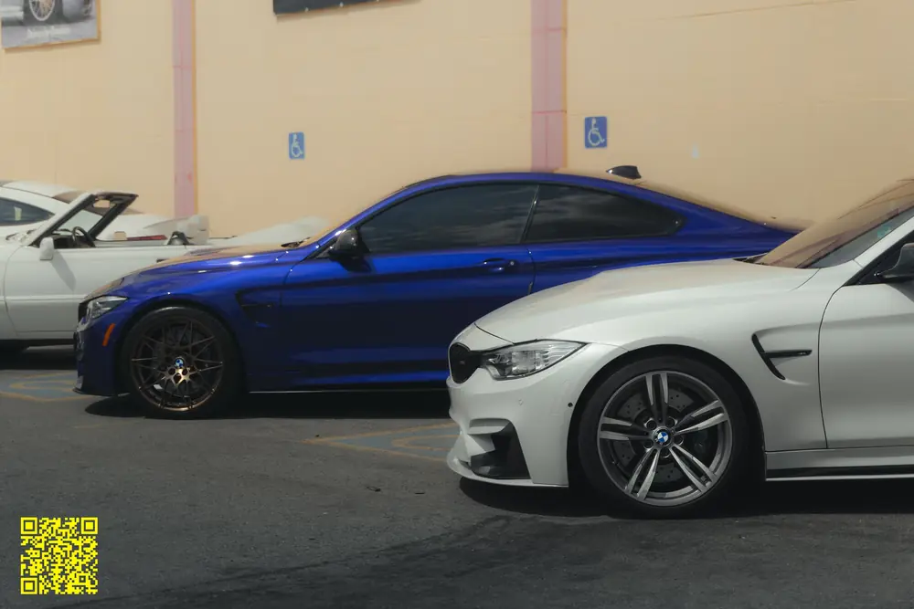
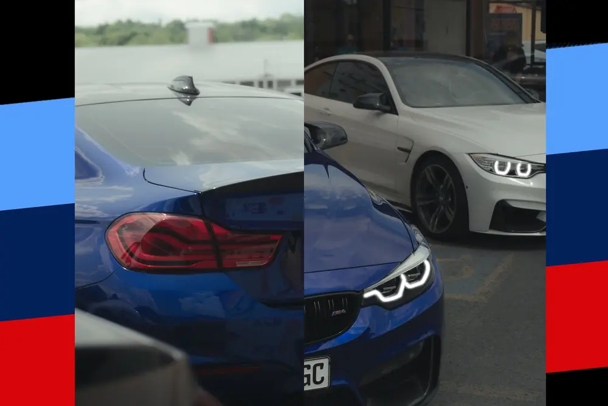

June 2025 · YFC Autofest
YFC Autofest 2025
YFC Autofest 2025. A slammed yellow Audi Q5 under storm clouds, an Evo X, a hot rod pickup and a whole row of BMWs, with a few poster covers mixed in.

- Category
- Events & shows
- Posted
- June 2025
- Location
- YFC Autofest
- Photographs
- 27
- 2 posts, linked below
01
The lot
The Audi, an Evo X, a hot rod pickup and more.


02
BMW row
M4s, an E36 convertible, an E39 and an E46.




More events.
Events & shows


Your car. The next feature.
DM @ln._photos with your car, a date and where you’d like to shoot.